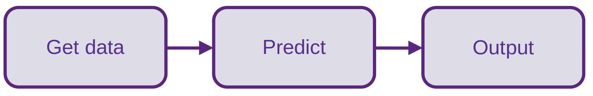

Batch Prediction
Remembering Online prediction
In the last class, we saw how to deploy a model using RESTful APIs.
Question 1
Answer
Online prediction is when predictions are generated and returned as soon as requests for these predictions are received by the service. We usually do it because this instant or real-time prediction is needed!

Some examples where it could be usefull:
- Making time-critical predictions like detecting fraud moments after a transaction occurs
- Provide real-time recommendations: movies, ads, products
- Run sentiment analysis during chatbot conversations.
In the next classes, we will revisit this category of model deployment (online), making it more robust. For now, let's look at the batch prediction category!
What is batch prediction?
In this deployment category, the trained model is applied to previously collected, static datasets stored in files or databases, rather than real-time streaming data.
Info
The predictions are generated periodically or whenever triggered.
We will deal with scheduling in the next classes.
Batch prediction is suitable for non-real time predictive tasks like:
- Price forecasting
- Customer churn
- Store assortment
where results aren't needed instantly.
Planning!
Note that the deployment category to be used depends a lot on how the model will be used.
For example, a pricing model could either need batch predictions (suppose the price will be printed on a flyer) or real-time online (if the price changes a lot and will be used on a website, varying according to customer behavior).
Whenever possible, align this clearly with the customer at the planning stage of the model lifecycle!
Doing batch prediction
In the first class, when we saw how to standardize a data science project, there were specific folders for data storage, notebooks and source code.

Question 2
Answer
If the model doensn't exists, we need data to train it! So, probably yes!
Question 3
Answer
You may find that the data is not enough in volume or that you need new features to achieve the design goals.
Assuming enough data, it would be transformed (feature engineering, feature selection) but would remain the same during training in the phase of model construction.
Question 4
Answer
Yes for the first, no for the second!
It will be necessary to retrain if the model lose performance over time (it almost certainly will).
We'll deal with retraining in the next classes, but it's important to start thinking about it!
Question 5
Answer
Absolutely not! In the first class we did this for simplicity. We would like to make predictions on new data.
Question 6
Answer
No. Assuming that the whole file has been predicted, the next time that the prediction script is called, we would like to indicate a new file or that the predict.csv file has new data.
So, in order to do batch prediction, we need to worry about getting data!

So let's talk about data formats and data sources. Advance to the next topic!